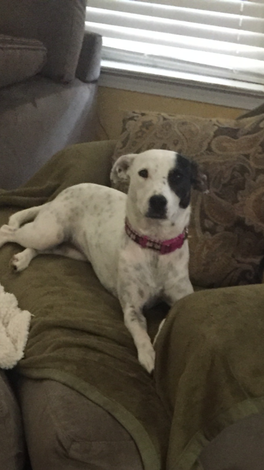
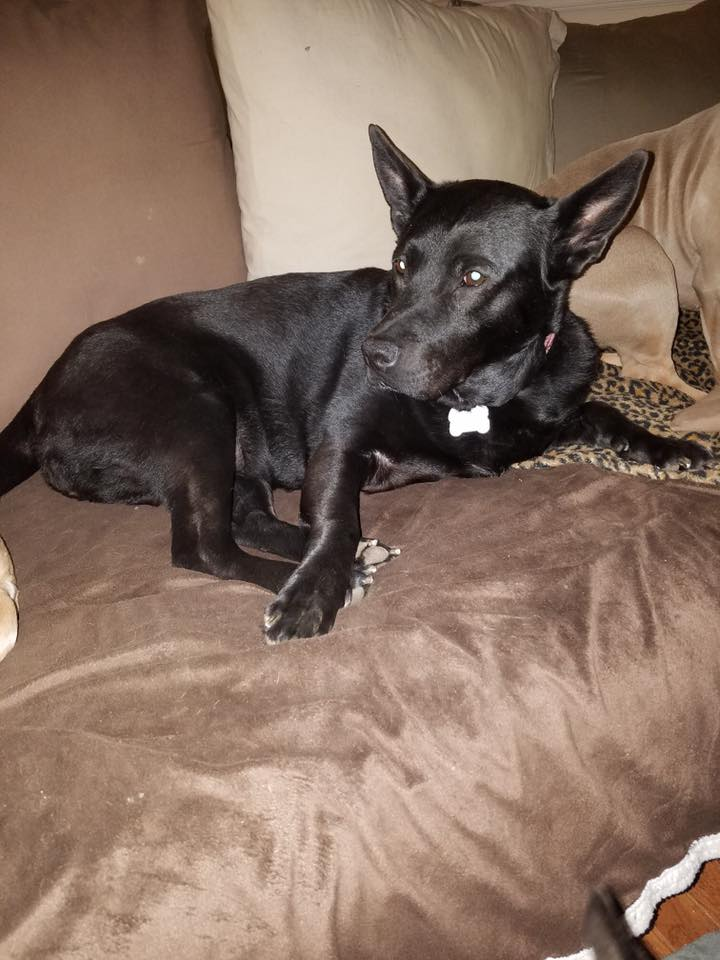
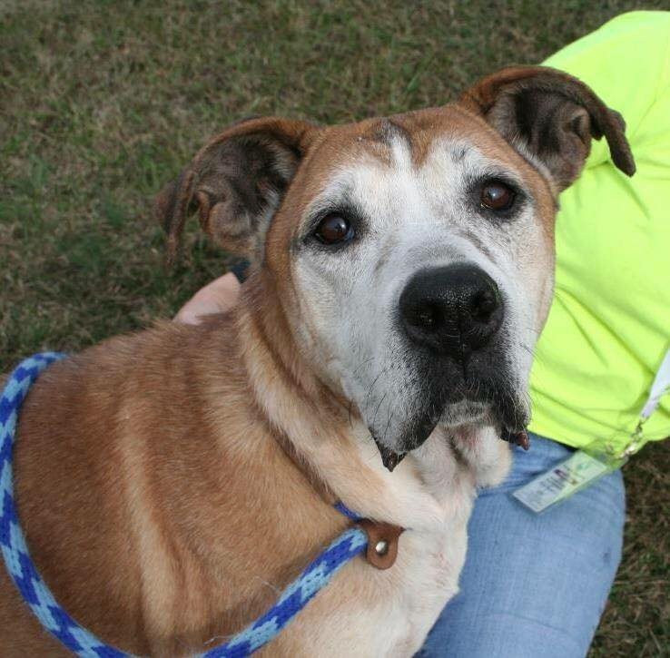
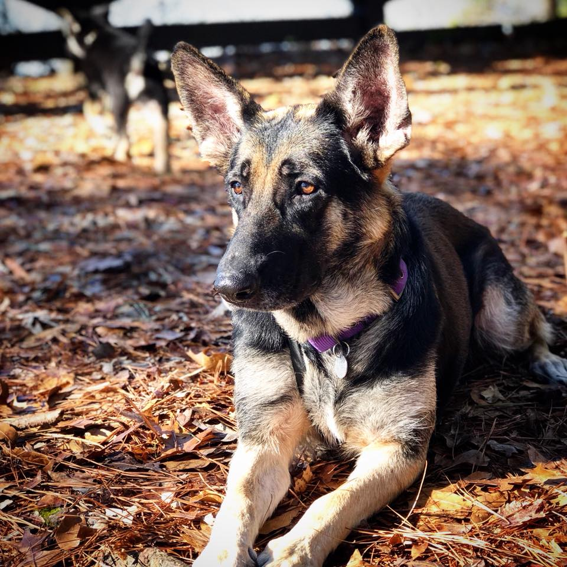

Often times when people are looking to adopt a puppy, they tend to gravitate towards purebred puppies that come from expensive breeders and pet stores. While those puppies might be quite adorable, however, there are a lot of consequences to buying a puppy versus recuing one. Usually when a dog is bought from one of these places, the puppies come from puppy mills. In puppy mills, breeders are more concerned abour profit than the well being of the dogs, and puppies are often crowded and in horrible conditions.
Rather than supporting these horrible puppy mills, it's better to adopt a puppy from a rescue or a shelter. In these places, puppies also come from horrible situations, but the rescues and shelters are more concerned with the well being of the dogs. It's also usually the case that dogs from these places are cheaper and come with vaccinations and are often spayed and neutered, which helps the problem of dog overpopulation.
So, rather than buying a dog from a crowded pet store that likely came from horrible conditions in a puppy mill, you should instead consider adopting a dog from a local rescue or shelter, where dogs came from sad lives and can be given a second chance at a forever home. At a local shelter like Ruff Redemption, located in Woodstock, GA, adoptable dogs are plentiful and prices are much lower. Every dog comes with spay and neuter and vaccinations up to date. Below are a few dogs available for adoption.
| Claire | 1 years old, medium sized, terrier mix |  |
| Sheba | 8 years old, large, black lab/german shepard |  |
| Bruno | 8 years old, large, mutt |  |
| Rose | 3 years old, large, German Shepard |  |
Ruff Redemption's official Facebook page: Ruff Redemption
Ruff Redemption founder Kim Jacobs